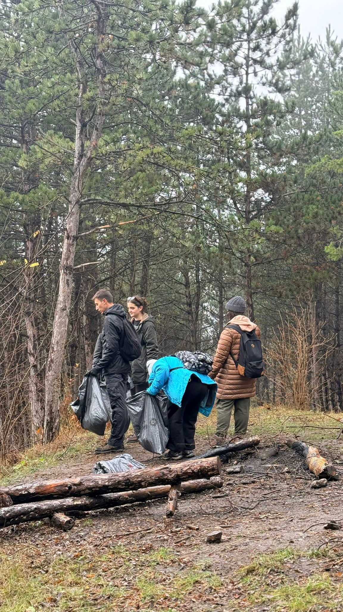
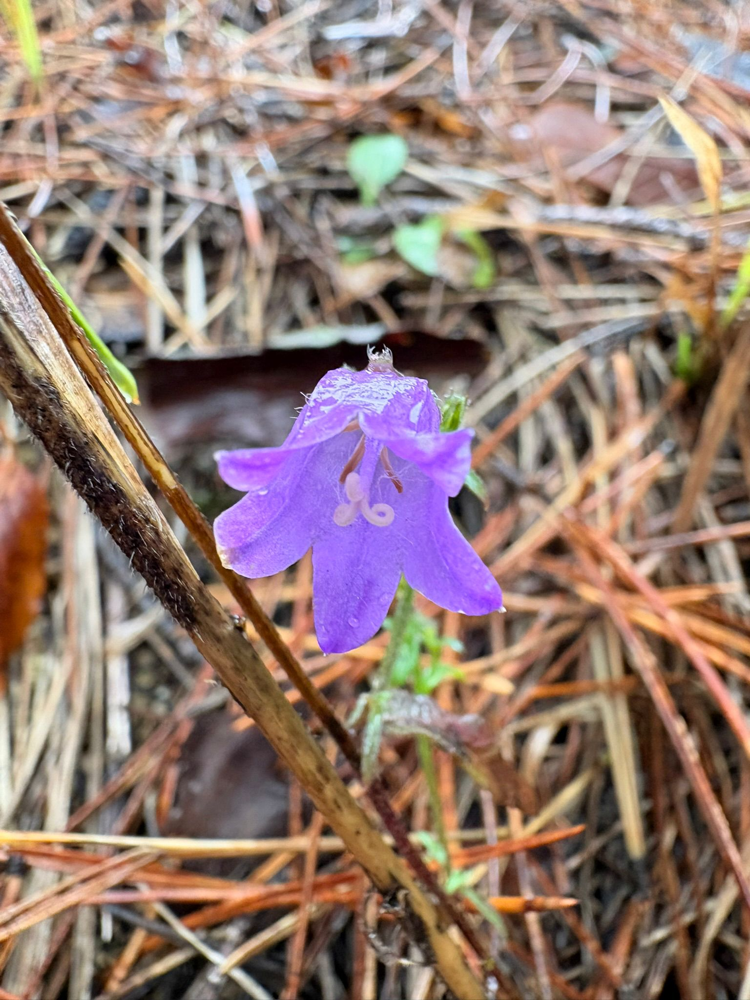
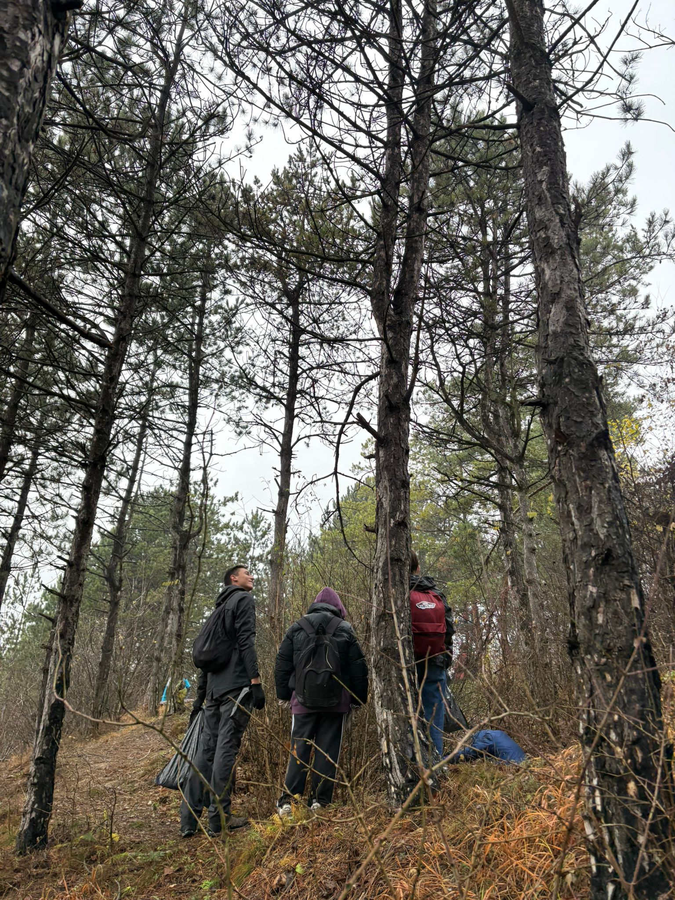

Momente Environmental Rise
.jpeg)



Protejăm natura pentru un viitor mai bun!
Ne dorim să construim o comunitate în care natura este respectată, protejată și înțeleasă ca parte esențială din viața noastră, nu doar ca o resursă de exploatat. Prin acțiuni concrete, educație și implicare activă, Environmental Rise își propune să educe și să inspire oamenii să acționeze responsabil. Dorim să îi îndemnăm să contribuie la un mediu mai curat și mai echilibrat pentru generațiile viitoare.
Ne implicăm activ în protejarea și refacerea ecosistemelor prin campanii de împădurire și plantare de specii native în zone afectate de defrișări. Plantăm flori sălbatice în spații urbane și organizăm acțiuni de strângere a deșeurilor și curățare a zonelor afectate de depozitări ilegale, oferind comunității spații mai curate. Fiecare inițiativă este un pas concret prin care transformăm grija pentru natură în rezultate vizibile.
Environmental Rise înseamnă oameni care aleg să facă parte dintr-o soluție și să acționeze împreună pentru binele comun. Organizăm întâlniri, drumeții și evenimente care aduc împreună persoane cu valori și preocupări similare. Prin aceste proiecte, încurajăm colaborarea, responsabilitatea și formarea unei comunități unite, responsabile și active, care pune natura în centrul deciziilor și acțiunilor sale.


